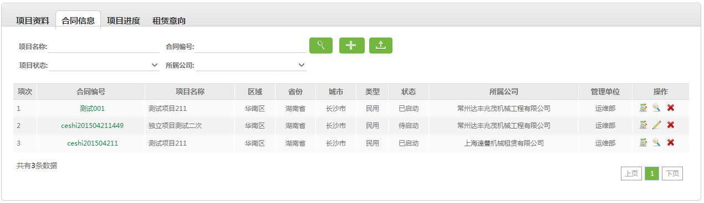

3.2、合同信息

 进行合同信息查询，查询条件：项目名称、合同编号、项目状态、所属公司；
进行合同信息查询，查询条件：项目名称、合同编号、项目状态、所属公司；
2、 新增合同信息,
新增合同信息, 导出查询的所有合同信息;
导出查询的所有合同信息;
3、点击合同编号查看详情、 审核、
审核、 编辑、和
编辑、和 下载合同信息;
下载合同信息;
4、流程：新增-保存-审核。未审核时可编辑，审核后不可编辑。
业务背景：
项目状态共有3个:
1. 待启动：项目中没有任何塔机在运作。
2. 已启动：项目中的任何一台(不用全部)塔机开始运作。
3. 关闭：项目中全部的塔机都已经结束任务时，该项目状态为关闭。
说明：
1、进行合同信息查询，查询条件：项目名称、合同编号、项目状态、所属公司；2、
新增合同信息,导出查询的所有合同信息;3、点击合同编号查看详情、
编辑、和4、流程：新增-保存-审核。未审核时可编辑，审核后不可编辑。